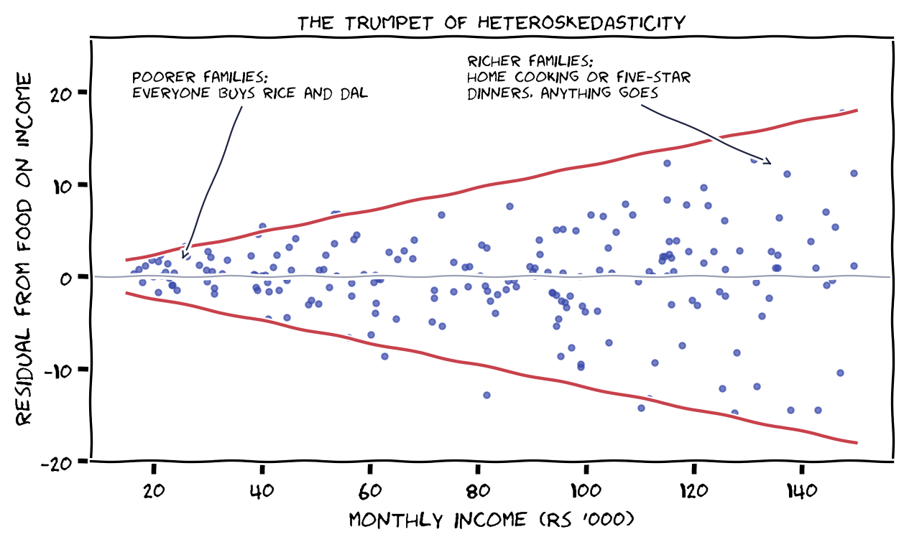

When the Errors Fan Out: Heteroskedasticity, a Jazz Trumpeter, and the Battle of the K
Ask a family earning ₹20,000 a month how much they spend on food, and the answer will sit in a narrow range. There is only so much room to move. Ask a family earning ₹1,50,000 a month, and the answers spread out. One family cooks simple meals at home; another eats out four nights a week. Same income, very different food bills.
That simple observation has one of the longest words in economics: heteroskedasticity. It means the spread of the errors is not the same for everyone. Let's meet the word, the people behind it, every test you need, and the three ways to deal with it.
Part II · Foundations · Chapter 5 of 9
1. Omitted variables · 2. Spurious regression · 3. R-squared · 4. Measurement error · 5. Heteroskedasticity · 6. Autocorrelation · 7. Dummy variables · 8. Structural breaks · 9. Multicollinearity
Data: blog_datasets.xlsx, sheet P5_hetero · Simulated cross-section, 200 households · EViews program
First, the spelling war
The word comes from Greek: hetero (different) and skedasis (scattering). Should it be spelled with a k or a c? Economists have actually argued about this in print. In 1985, J. Huston McCulloch published a short note in Econometrica, titled "On Heteros*edasticity", arguing for the k, since the Greek letter is a kappa. British writers long preferred the c. A later study of usage found the k spelling has overtaken the c only in the 2000s. This blog uses the k. You may use whichever letter annoys your teacher least.
The data and a familiar law
For 200 households we have monthly FOOD spending and monthly INCOME, both in ₹ thousand. In 1857 the German statistician Ernst Engel noticed that the share of the budget spent on food falls as families get richer. It is still called Engel's law, and our data obey it.
ls food c income
Dependent Variable: FOOD
Method: Least Squares
Date: 10/27/26 Time: 21:45
Sample: 1 200
Included observations: 200
==============================================================================
Variable Coefficient Std. Error t-Statistic Prob.
==============================================================================
C 3.557278 0.839040 4.239702 0.0000
INCOME 0.221461 0.009361 23.65894 0.0000
==============================================================================
R-squared 0.738699 Mean dependent var 21.56240
Adjusted R-squared 0.737379 S.D. dependent var 9.749858
S.E. of regression 4.996469 Akaike info criterion 6.065290
Sum squared resid 4943.010 Schwarz criterion 6.098273
Log likelihood -604.5290 Hannan-Quinn criter. 6.078637
F-statistic 559.7454 Durbin-Watson stat 1.799203
Prob(F-statistic) 0.000000
==============================================================================
Out of every extra ₹1,000 of income, about ₹221 goes on food, close to the 0.22 I used to create the data. So far, so good. But every standard error in this table was computed as if the errors have the same variance for every household. That assumption is called homoskedasticity, and we have just argued it is false.
Picture it first

In EViews, save the residuals and plot them against INCOME (or View → Actual, Fitted, Residual → Residual Graph). You see a trumpet: residuals huddle near zero for poorer households and spread wide for richer ones.
Why it matters (and why it doesn't)
What heteroskedasticity does to OLS (click to open)
With one regressor, the OLS slope is \(\hat\beta = \beta + \dfrac{\sum (x_i - \bar x) u_i}{\sum (x_i - \bar x)^2}\). Its variance is
If all \(\sigma_i^2 = \sigma^2\), this simplifies to the textbook \(\sigma^2 / \sum (x_i - \bar x)^2\). If not, the textbook formula is simply the wrong formula. Notice that the expected value of \(\hat\beta\) is still \(\beta\): heteroskedasticity does not bias the slope.
The good news: the coefficients are still unbiased. The bad news: the usual standard errors are wrong, so t-statistics, p-values and confidence intervals cannot be trusted. And OLS is no longer the most efficient estimator.
The tests: a family portrait
All of them follow one idea. Square the residuals, which are rough measures of each household's error variance, and ask whether anything predicts them.
White (1980): the all-rounder
Halbert White's 1980 Econometrica paper is among the most cited papers in all of economics. White regressed the squared residuals on the regressors, their squares and cross-products, so the test doesn't need you to guess the form of the heteroskedasticity. White was also a jazz trumpeter and composer who played in Kansas City as a teenager and for more than 20 years in San Diego, and co-founded the consulting firm Bates White. He died in 2012, aged 61. In his own words, a connection to the arts is essential to being a complete person.
View → Residual Diagnostics → Heteroskedasticity Tests → White (here without cross terms, since there is one regressor):
Heteroskedasticity Test: White
Null hypothesis: Homoskedasticity
==============================================================================
F-statistic 23.09812 Prob. F(2,197) 0.0000
Obs*R-squared 37.99092 Prob. Chi-Square(2) 0.0000
Scaled explained SS 70.91685 Prob. Chi-Square(2) 0.0000
==============================================================================
Breusch-Pagan-Godfrey (1979): the targeted test
Two Australians, Trevor Breusch and Adrian Pagan, proposed regressing the squared residuals on variables you suspect drive the variance (Leslie Godfrey derived a closely related test in 1978). Here, income.
Heteroskedasticity Test: Breusch-Pagan-Godfrey
Null hypothesis: Homoskedasticity
==============================================================================
F-statistic 39.32967 Prob. F(1,198) 0.0000
Obs*R-squared 33.14349 Prob. Chi-Square(1) 0.0000
Scaled explained SS 61.86826 Prob. Chi-Square(1) 0.0000
==============================================================================
Glejser (1969): use absolute values
Herbert Glejser regressed the absolute residuals instead of the squares, which is less sensitive to a few huge errors. (Same dialog, choose Glejser.)
Heteroskedasticity Test: Glejser
Null hypothesis: Homoskedasticity
==============================================================================
F-statistic 47.41566 Prob. F(1,198) 0.0000
Obs*R-squared 38.64110 Prob. Chi-Square(1) 0.0000
==============================================================================
Goldfeld-Quandt (1965): split the sample
The oldest and most intuitive test, from Stephen Goldfeld and Richard Quandt at Princeton. Sort the households by income, drop the middle 20%, run the regression separately on the 80 poorest and the 80 richest, and compare the residual sums of squares:
In our data, \(SSR_{\text{rich}} = 3690\) and \(SSR_{\text{poor}} = 592\), so GQ = 6.24, against a 5% critical value of 1.45. The rich households' errors are six times as variable. (EViews has no button for this one; it takes three ls commands with smpl statements in between.)
| Test | Statistic | p-value | Verdict |
|---|---|---|---|
| White | Obs·R² = 38.0 | < 0.0001 | Heteroskedastic |
| Breusch-Pagan-Godfrey | F = 39.3 | < 0.0001 | Heteroskedastic |
| Glejser | F = 47.4 | < 0.0001 | Heteroskedastic |
| Goldfeld-Quandt | F = 6.24 | < 0.0001 | Heteroskedastic |
Four witnesses, one verdict.
Fix 1: robust standard errors
Keep the same coefficients, but compute standard errors that allow each household its own variance. White's formula replaces each unknown \(\sigma_i^2\) with the squared residual \(\hat e_i^2\). In EViews, Options → Coefficient covariance matrix: White, or ls(cov=white) food c income.
Dependent Variable: FOOD
Method: Least Squares
Date: 10/27/26 Time: 21:45
Sample: 1 200
Included observations: 200
White heteroskedasticity-consistent standard errors & covariance
==============================================================================
Variable Coefficient Std. Error t-Statistic Prob.
==============================================================================
C 3.557278 0.651411 5.460885 0.0000
INCOME 0.221461 0.010455 21.18271 0.0000
==============================================================================
R-squared 0.738699 Mean dependent var 21.56240
Adjusted R-squared 0.737379 S.D. dependent var 9.749858
S.E. of regression 4.996469 Akaike info criterion 6.065290
Sum squared resid 4943.010 Schwarz criterion 6.098273
Log likelihood -604.5290 Hannan-Quinn criter. 6.078637
F-statistic 559.7454 Durbin-Watson stat 1.799203
Prob(F-statistic) 0.000000
==============================================================================
The coefficients and R-squared are identical. Only the standard errors changed: on INCOME, from 0.0094 to 0.0105; on C, down from 0.84 to 0.65. Robust standard errors do not always get bigger. They get honest.
Fix 2: weighted least squares
If we know how the variance grows, we can do better than just fixing the standard errors. In our data the error's standard deviation grows in proportion to income. Divide the whole equation by INCOME:
The new error \(u_i / INCOME_i\) has constant variance. Notice the switch: the old slope \(\beta_2\) is now the constant, and the old constant \(\beta_1\) is the coefficient on \(1/INCOME\).
ls food/income c 1/income
Dependent Variable: FOOD/INCOME
Method: Least Squares
Date: 10/27/26 Time: 21:45
Sample: 1 200
Included observations: 200
==============================================================================
Variable Coefficient Std. Error t-Statistic Prob.
==============================================================================
C 0.211935 0.006910 30.66871 0.0000
1/INCOME 4.252737 0.330162 12.88076 0.0000
==============================================================================
R-squared 0.455915 Mean dependent var 0.284671
Adjusted R-squared 0.453168 S.D. dependent var 0.076179
S.E. of regression 0.056333 Akaike info criterion -2.905136
Sum squared resid 0.628326 Schwarz criterion -2.872153
Log likelihood 292.5136 Hannan-Quinn criter. -2.891788
F-statistic 165.9140 Durbin-Watson stat 1.899792
Prob(F-statistic) 0.000000
==============================================================================
The marginal propensity to spend on food is now the constant: 0.2119, with a standard error of 0.0069, much smaller than OLS's 0.0094 (or the robust 0.0105). Giving less weight to the noisy rich households and more to the precise poorer ones squeezes more information out of the same data. And the White test on this transformed equation is now quiet:
Heteroskedasticity Test: White
Null hypothesis: Homoskedasticity
==============================================================================
F-statistic 0.467354 Prob. F(2,197) 0.6274
Obs*R-squared 0.944461 Prob. Chi-Square(2) 0.6236
Scaled explained SS 0.895649 Prob. Chi-Square(2) 0.6390
==============================================================================
Fix 3: change the scale
Often the fan exists because the relationship is proportional. A rich family's errors are big in rupees but similar in percentages. Taking logs puts everyone on a percentage scale. ls log(food) c log(income)
Dependent Variable: LOG(FOOD)
Method: Least Squares
Date: 10/27/26 Time: 21:45
Sample: 1 200
Included observations: 200
==============================================================================
Variable Coefficient Std. Error t-Statistic Prob.
==============================================================================
C -0.125851 0.119511 -1.053048 0.2936
LOG(INCOME) 0.725762 0.027822 26.08553 0.0000
==============================================================================
R-squared 0.774604 Mean dependent var 2.963323
Adjusted R-squared 0.773466 S.D. dependent var 0.477765
S.E. of regression 0.227395 Akaike info criterion -0.114305
Sum squared resid 10.23830 Schwarz criterion -0.081322
Log likelihood 13.43052 Hannan-Quinn criter. -0.100957
F-statistic 680.4549 Durbin-Watson stat 1.877997
Prob(F-statistic) 0.000000
==============================================================================
Heteroskedasticity Test: White
Null hypothesis: Homoskedasticity
==============================================================================
F-statistic 1.722627 Prob. F(2,197) 0.1813
Obs*R-squared 3.437601 Prob. Chi-Square(2) 0.1793
Scaled explained SS 5.581220 Prob. Chi-Square(2) 0.0614
==============================================================================
The White test no longer rejects at 5%. And the slope has a neat meaning: a 1% rise in income raises food spending by about 0.73%. Food is a necessity, with an elasticity below 1, just as Engel found.
The lesson
Heteroskedasticity is not a disaster; it is information. It tells you the world is more varied at one end than the other. Ignore it and your p-values lie. Test for it, report robust standard errors as a minimum, and if you understand where it comes from, use weights or logs to get sharper estimates.
Something to think about
In the log model, the constant has a p-value of 0.29. Should we drop it? What would forcing the line through the origin mean for a family with an income of ₹1,000 a month? And here's a puzzle: if robust standard errors always work, why would anyone bother with weighted least squares? Leave your answers in the comments.